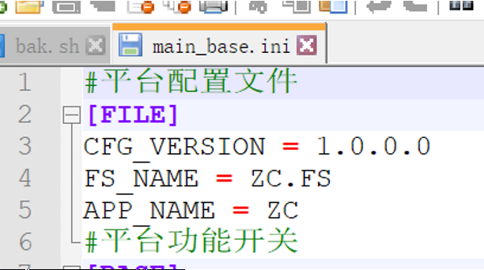

Linux命令-sed
本文最后更新于：2 分钟前
逐行读取文件保存在临时缓冲（模式空间），不会修改文件，除非用shell重定向
常用选项
| -n | 使用安静模式，在一般情况所有的 STDIN 都会输出到屏幕上，加入-n 后只打印被 sed 特殊处理的行 |
|---|---|
| -e | 多重编辑，且命令顺序会影响结果 |
| -f | 指定一个 sed 脚本文件到命令行执行， |
| -r | Sed 使用扩展正则 |
| -i | 直接修改文档读取的内容，不在屏幕上输出 |
操作命令
| 命令 | 说明 |
|---|---|
| a\ | 在当前行后添加一行或多行 |
| c\ | 用新文本修改（替换）当前行中的文本 |
| d | 删除行 |
| i\ | 在当前行之前插入文本 |
| h | 把模式空间里的内容复制到暂存缓存区 |
| H | 把模式空间里的内容追加到暂存缓存区 |
| g | 取出暂存缓冲区里的内容，将其复制到模式空间，覆盖该处原有内容 |
| G | 取出暂存缓冲区里的内容，将其复制到模式空间，追加在原有内容后面 |
| l | 列出非打印字符 |
| p | 打印行 |
| n | 读入下一输入行，并从下一条命令而不是第一条命令开始处理 |
| q | 结束或退出 sed |
| r | 从文件中读取输入行 |
| ！ | 对所选行意外的所有行应用命令 |
| s | 用一个字符串替换另一个 |
示例
_APPTYPE=$(sed '/^APP_NAME\s*=/!d;s/.*=\s*//;s/\r$//' /mnt/hgfs/Share_Ubuntu/main_base.ini)

上述例子 ‘ ‘ 单引号中有三部分：
/^APP_NAME\s*=/!d其中 / /内表示匹配以APP_NAME字符开头的行，\s* 匹配空格，!d表示删除其他非匹配的行s/.*=\s*//表示替换字符，将 .*= 【=号前所有字符和=号后空格】替换为/【空字符】s/\r$//表示将行尾的回车符替换为空字符，方式